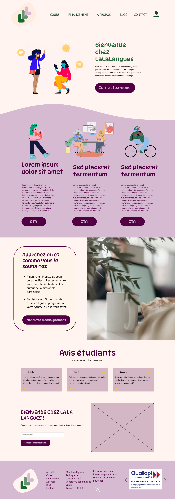
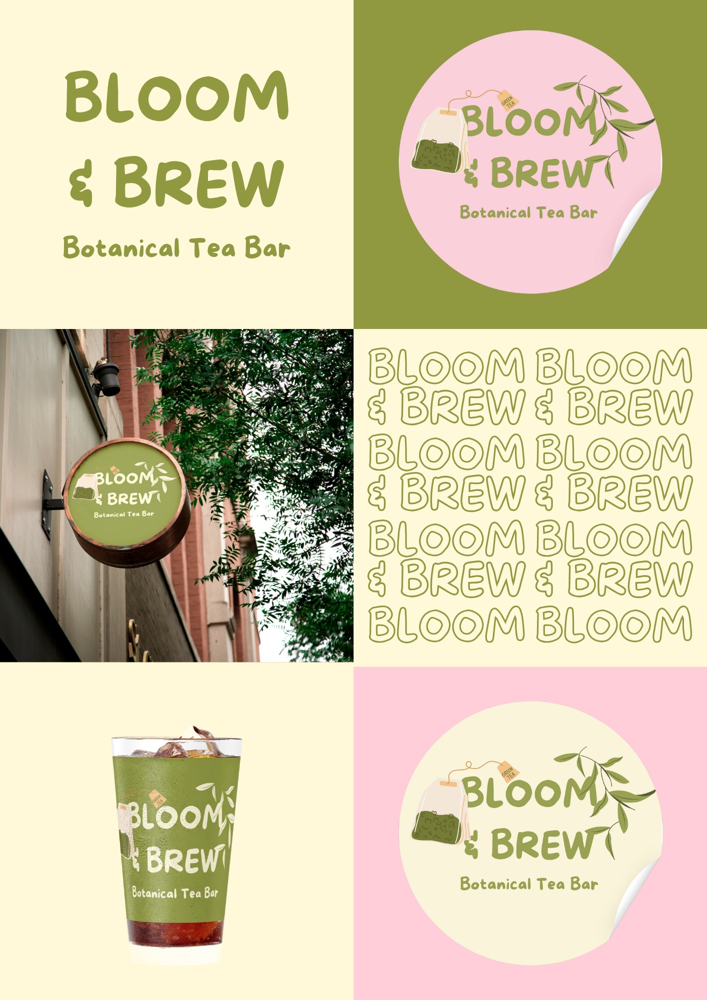
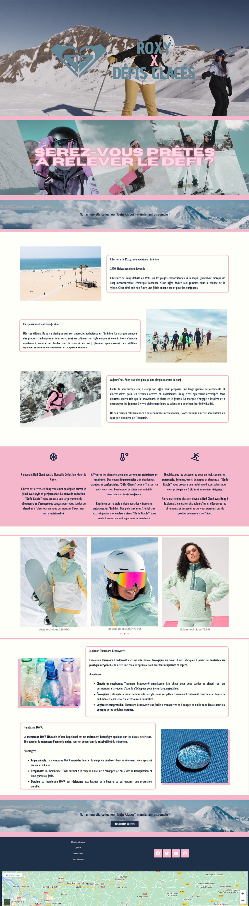

Projets
01
Scrappy
Courte description
Développement complet d'une application web. Scrappy est un réseau social de partage de balades, qui a pour objectif d'encourager les utilisateurs à sortir de chez eux et à découvrir de nouveaux endroits. En groupe de 3 étudiants, développée de A à Z — j'en suis la développeuse principale.

02
Esport Olympique
Courte description
Et si l'Esport était une discipline olympique ? Projet réalisé en groupe de 5 dans le cadre du Master, développant le storytelling autour du thème du sport. J'ai occupé le rôle de développeuse web.

03
La La Langues
Courte description
Site web réel pour un organisme de formation en langues basé à Bordeaux. De la charte graphique au développement WordPress, en passant par le maquettage — cheffe de projet et développeuse web, avec une équipe de 4 personnes.

04
The Mandalorian
Courte description
Mon premier projet HTML/CSS, réalisé en dernière année de licence LEA. Chacun devait choisir une série TV à représenter en gardant son atmosphère graphique — grande fan de Star Wars, j'ai choisi The Mandalorian.

05
Présentation développeur web
Courte description
Support de présentation sur le métier de développeur web, conçu dans le cadre du cours Projet Professionnel Étudiant de mon Master, en complément d'une présentation orale.

06
Bloom & Brew
Courte description
Création d'une identité visuelle pour une marque de café bio et éthique fictive.

07
Landing page Roxy
Courte description
Projet de landing page réalisé dans le cadre d'un projet de licence — création d'une landing page pour la nouvelle collection fictive d'un site de vente de vêtements en ligne, Roxy.
